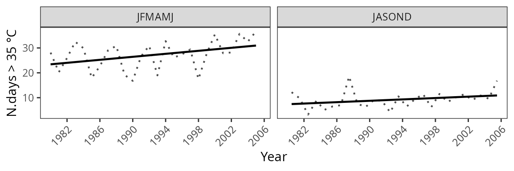

Introduction
Introduction.Rmd
library(CAVAanalytics)
#> Loading required package: loadeR.java
#> Loading required package: rJava
#> Java version 11x amd64 by Oracle Corporation detected
#> NetCDF Java Library v4.6.0-SNAPSHOT (23 Apr 2015) loaded and readyMore info about CAVAanalytics
The main purpose of CAVAanalytics is making the processing and visualization of multiple climate models simple. Additionally, CAVAanalytics offers an access point to download CORDEX-CORE climate models, the high resolution (25 Km) dinamically-downscaled climate models used in the IPCC report AR5. CAVAanalytics also offers access to state-of-the-art reanalyses datasets, such as W5E5 and ERA5.
CAVAanalytics is built on top of climate4R and several tidyverse packages. The current available data that can be downloaded using the package are:
- CORDEX-CORE simulations (3 GCMs donwscaled with 3 RCMs for two RCPs)
- W5E5 and ERA5 reanalyses datasets
Available variables are:
- Daily maximum temperature (tasmax)
- Daily minimum temperature (tasmin)
- Daily precipitation (pr)
- Daily relative humidity (hurs)
- Daily wind speed (sfcWind)
- Daily solar radiation (rsds)
Loading CORDEX-CORE data
Below we are automatically downloading all CORDEX-CORE simulations alongside the observational dataset W5E5 for Kenya. As you can see, it is extremely simple. We will see how to work with locally available models in another vignette.
Note that this process can take a while, depending on the size of the country and the number of years specified
# to download a specific area, set country=NULL and specify xlim and ylim arguments
kenya_exmp <- load_data(path.to.data = "CORDEX-CORE", country = "Kenya", variable = "tasmax",
years.proj = 2030:2055, years.hist = 1980:2005, domain = "AFR-22", path.to.obs = "W5E5")
#> ℹ Accessing inventory
#> ✔ Accessing inventory [3.5s]
#>
#> ℹ Downloading CORDEX-CORE data (18 simulations). This might take a while. Using…
#> ✔ Downloading CORDEX-CORE data (18 simulations). This might take a while. Using…
#>
#> ℹ Downloaded 1.82 GB
#> ℹ Binding members and checking temporal consistency
#> ℹ Downloading W5E5
#> ✔ Downloading W5E5 [6m 18s]
#>
#> ℹ Binding members and checking temporal consistency
✔ Binding members and checking temporal consistency [6m 32.9s]
#>
#> ℹ Temperature has been converted into CelsiusYou can explore the output using attributes(kenya_exmp).
# the main output of the loading function is a tibble with list column containing all the downloaded data
class(kenya_exmp[[1]])
#> [1] "tbl_df" "tbl" "data.frame"
colnames(kenya_exmp[[1]])
#> [1] "experiment" "models_mbrs" "obs"
kenya_exmp[[1]]$experiment
#> [1] "historical" "rcp26" "rcp85"
# the column models_mbrs stands for model members. The structure of this element comes from the loadeR package. The data is contained in the data element, and as you can see, it has 6 members. CAVAanalytics automatically binds together multiple models and checks for temporal consistency.
dim(kenya_exmp[[1]]$models_mbrs[[1]]$Data)
#> [1] 6 9278 40 33Projections
What if you want to have a look at what will be the projected maximum temperature in Kenya for the 2030-2055 time period? This is easy to do with CAVAanalytics:
# you can specify the season. In this case we are looking at the whole year
proj_kenya <- projections(kenya_exmp, season=1:12)
#> ℹ projections, season 1-2-3-4-5-6-7-8-9-10-11-12. Calculation of mean tasmax
#> ℹ Performing calculations
#> ✔ Performing calculations [6.4s]
#>
# stat can take either mean or sd. It is used in combination with ensemble=T. Default is always mean
plotting(proj_kenya, ensemble=T, stat="mean", plot_titles = "mean tasmax")
#> ℹ Visualizing ensemble mean
#> ℹ Plotting
#> ✔ Plotting [31ms]
#> 
plotting(proj_kenya, ensemble=F, stat="mean", plot_titles = "mean tasmax")
#> ℹ Visualizing individual members, argument stat is ignored
#> ℹ Plotting
#> ✔ Plotting [38ms]
#> 
Sometime looking at mean temperatures is not useful. Maybe we are interested in understanding the number of days in which certain conditions are projected to occur. For example, the number of days with maximum temperatures above 35 °C.
proj_kenya_35 <- projections(kenya_exmp, season=1:12, uppert=35)
#> ℹ projections, season 1-2-3-4-5-6-7-8-9-10-11-12. Calculation of number of days with tasmax above threshold of 35
#> ℹ Performing calculations
#> ✔ Performing calculations [5.4s]
#>
plotting(proj_kenya_35, ensemble=T, plot_titles = "N.days > 35", palette=c("white", "orange", "red", "darkred"))
#> ℹ Visualizing ensemble mean
#> ℹ Plotting
#> ✔ Plotting [14ms]
#>  Ok, then what about model biases? How can we correct for those? Again,
this is simple to do with CAVAanalytics:
Ok, then what about model biases? How can we correct for those? Again,
this is simple to do with CAVAanalytics:
# bias correction is applied with the widely used empirical quantile method
proj_kenya_35bc <- projections(kenya_exmp, season=1:12, bias.correction = T, uppert=35)
#> ℹ projections, season 1-2-3-4-5-6-7-8-9-10-11-12. Calculation of number of days with tasmax above threshold of 35 after bias-correction
#> ℹ Performing calculations
#> ℹ Performing monthly bias correction with the empirical quantile mapping method, for each model and month separately. This can take a while. Season 1-2-3-4-5-6-7-8-9-10-11-12
#> ℹ Performing calculations
■■■■■■■■■■■■■■■■ 50% | ETA: 48s
#> ℹ Performing calculations
✔ Performing calculations [1m 37.6s]
plotting(proj_kenya_35bc, ensemble=T, plot_titles = "N.days > 35 after bc", palette=c("white", "orange", "red", "darkred"))
#> ℹ Visualizing ensemble mean
#> ℹ Plotting
#> ✔ Plotting [13ms] As you can see, we lost resolution and that is because the W5E5 dataset
is at 50 Km. To preserve the CORDEX-CORE native resolution after
bias-correction we would need to use the ERA5 dataset.
As you can see, we lost resolution and that is because the W5E5 dataset
is at 50 Km. To preserve the CORDEX-CORE native resolution after
bias-correction we would need to use the ERA5 dataset.
Climate change signal
While looking at future periods might be useful, sometimes we are more interested in understanding delta changes, hence the relative increase or decrease in mean maximum temperatures compared to baseline. This is also possible with CAVAanalytics:
ccs_kenya <- climate_change_signal(kenya_exmp, season=1:12)
#> ℹ climate change signal, season 1-2-3-4-5-6-7-8-9-10-11-12. Climate change signal for mean tasmax
#> ℹ Performing calculations
#> ✔ Performing calculations [7.5s]
#>
plotting(ccs_kenya, ensemble=F, plot_titles = "Mean tasmax change", legend_range = c(-3, 3), palette = c("blue", "cyan", "green", "white", "yellow" ,"orange", "red"))
#> ℹ Visualizing individual members, argument stat is ignored
#> ℹ Plotting
#> ✔ Plotting [49ms]
#> 
Trends
While looking at delta changes and absolute values for projections is useful, it does not tell us about temporal trends. In CAVAanalytics, the function trends allow us to do just that. For example, let’s assume we want to know whether Kenya is projected to register a significant increase in yearly maximum temperatures:
# the historical argument allows us to study trends for the future or for the past. Note that for historical = T, we need to have specified path.to.obs because this option does not work with the historical experiment of climate models but with observation
trd_kenya <- trends(kenya_exmp, season=1:12, historical = F)
#> ℹ trends, projections, season 1-2-3-4-5-6-7-8-9-10-11-12. Calculation of yearly increase in mean tasmax
#> ℹ Processing rcp26
#> ℹ Applying multivariate linear regression to the ensemble. Global test statisti…
#> ✔ Applying multivariate linear regression to the ensemble. Global test statisti…
#>
#> ℹ Processing rcp85
#> ℹ Applying multivariate linear regression to the ensemble. Global test statisti…
#> ✔ Applying multivariate linear regression to the ensemble. Global test statisti…
#>
#> ℹ Processing rcp26
#> ℹ Applying linear regression to each ensemble member. P-value calculated using …
#> ✔ Applying linear regression to each ensemble member. P-value calculated using …
#>
#> ℹ Processing rcp85
#> ℹ Applying linear regression to each ensemble member. P-value calculated using …
#> ✔ Applying linear regression to each ensemble member. P-value calculated using …
#>
plotting(trd_kenya, ensemble=F, plot_titles = "°C/year", frequencies = F, spatial_aggr = F)
#> ℹ Visualizing individual members
#> ℹ Plotting
#> ✔ Plotting [1ms]
#> 
While we can visualize the results spatially, we can also look at temporal trends. Note that in the background, CAVAanalytics uses modern statistical techniques to draw conclusion on the significance of the slope parameter.
plotting(trd_kenya, ensemble=T, plot_titles = "°C/year", spatial_aggr = T, frequencies = F)
#> ! Arguments bins and legend_range are ignored
Rather than performing spatial averages and visualize trends, we can also appreciate the distribution of annual mean tasmax across Kenya by specifying frequencies =T
plotting(trd_kenya, ensemble=T, spatial_aggr = F, frequencies = T, n.groups = 2)
#> ! Arguments bins, legend_range, plot_titles and palette are ignored. Change number of group intervals with n.groups
#> Picking joint bandwidth of 0.403
#> Picking joint bandwidth of 0.402